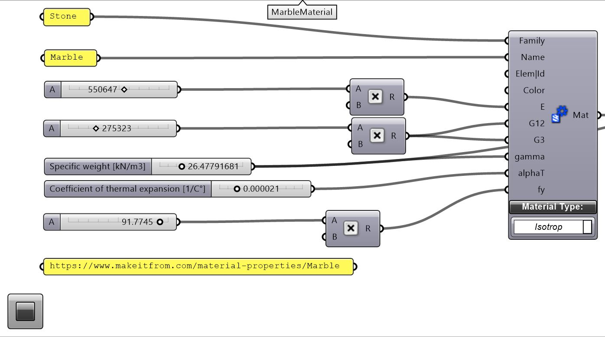
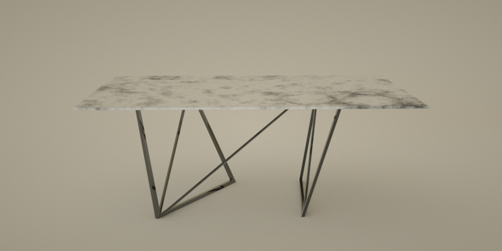
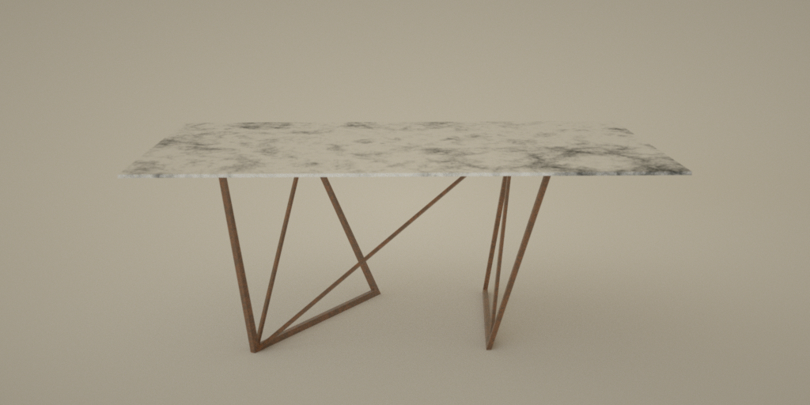

Felipe Gutiérrez
Programmer/Creative
El proceso de diseño comienza con un concepto de ligereza, de equilibrio. La primera aproximación al problema (transladar el peso de una lámina de marmol al suelo), nace de dos
primitivos el rectángulo y su subdivisión más resistente, el triángulo. Sostener la lámina con dos rectángulos subdivididos o serchas en los extremos permite tener un sistema
resistente con la menor cantidad de elementos. Sí optimizamos la cantidad de material de acuerdo a las fuerzas (tensión o compresión) se necesita mayor material donde el sistema
presenta compresión y menor cantidad de material donde hay tensión, esto nos permite tener una estructura más ligera. En teoría las diferentes fuerzas necesitan diferentes tipos
de material para reducir la sección de las piezas, pero por motivos estéticos, se utilizará el mismo material para los elementos que están a tensión como a compresión.
Ahora falta conectar los dos elementos estructurales con un elemento a tracción (una diagonal).

Sabiendo como se va a ver el concepto, se utilizará Grasshopper/Rhinoceros3d para crear el modelo.
Tomando como punto de pártida las dimensiones de la lámina de marmol

Con estos valores iniciales tenemos suficiente información para crear un modelo paramétrico en el que las posiciones de la estructura puedan modificarse. Esto nos dara la posibilidad de crear diseños diferentes de acuerdo a una lógica de optimización estructural.
Una vez creado el algoritmo que permite modificar los elementos, se crea un FEM (Finite Element Model) o Modelo de Elementos Finitos. Para poder correr una simulación estructural o FEA
(Finite Element Analysis) o Análisis de Elementos Finitos. Los elementos finitos son beams (lines/líneas) o vigas en español y shells (meshes/mallas) o conchas en español. Lo importante
para crear el FEM es que todos los elementos coincidan, es decir, sí se tiene una viga (beam) soportando una placa (shell), es importante que los puntos que componen cada uno de estos
elementos coincidan.

El procedimiento para cumplir este requerimiento es el siguiente, crear una superficie a partir del rectángulo original que va a simular nuestra lámina de marmol, dividir la superficie,
ya que nuestra lámina queda en contacto con una viga, adicionar los puntos que componen la viga (en este caso se decidió subdividir la línea original en más puntos para tener mayor
exactitud en el análisis estructural) a los puntos de la subdivisión de la superficie y construir una malla/mesh a partir de estos (a través de una triangulación de Delaunay) utilizando
el componente Delaunay Mesh de Grasshopper.

Para la simulación estructural se va a utilizar la versión gratuita del plugin Karamba3D (escrito por Clemens Preisinger en cooperación con Bollinger und Grohmann ZTGmbH) para Grasshopper. Se necesitan puntos, elementos, soportes, cargas y sección para correr la simulación. Lo primero es definir el material, en este caso marmol 
Lo siguiente es definir las secciones tanto para las vigas (patas) como para las conchas (placas), los soportes (vamos a utilizar los puntos de apoyo con el suelo) y las cargas (aquí vamos a
utilizar solamente la gravedad). Hay que tener cuidado con que no haya puntos repetidos para el análisis, se remueven con el componente removeDuplicatePts de Karamba3D.
Una vez corrida la simulación, podemos generar una visualización de la misma de la siguiente forma

Para optimizar la estructura, se utilizará el output Displacement (el desplazamiento que tendrán los elementos bajo las cargas definidas) del componente Analyze de Karamba3D, se busca minimizar este número.
Hay otras optimizaciones que podrían implementarse para tener menos desplazamientos, pero el concepto de diseño es el de la ligereza y sí se le agregan más elementos a la estructura, la mesa va
a verse sobre cargada. Por ejemplo la imagen de abajo es estructuralmente mejor que la planteada para el diseño, se puede ver que tiene menos desplazamientos.
 Que la planteada
Que la planteada

Una vez creado el diseño, se crean diferentes secciones para los elementos que funcionan a tracción (más delgados) que para los elementos que están a compresión. Se queman/bake los breps a Rhino
desde Grasshopper y se realizan operaciones "Split" entre los elementos para obtener elementos que puedan ser cortados y soldados.
Después se realizan pruebas de materiales mediante renders
 Bronce
Bronce

Metal negro

Metal oxidado
Aquí otros renders que se hicieron